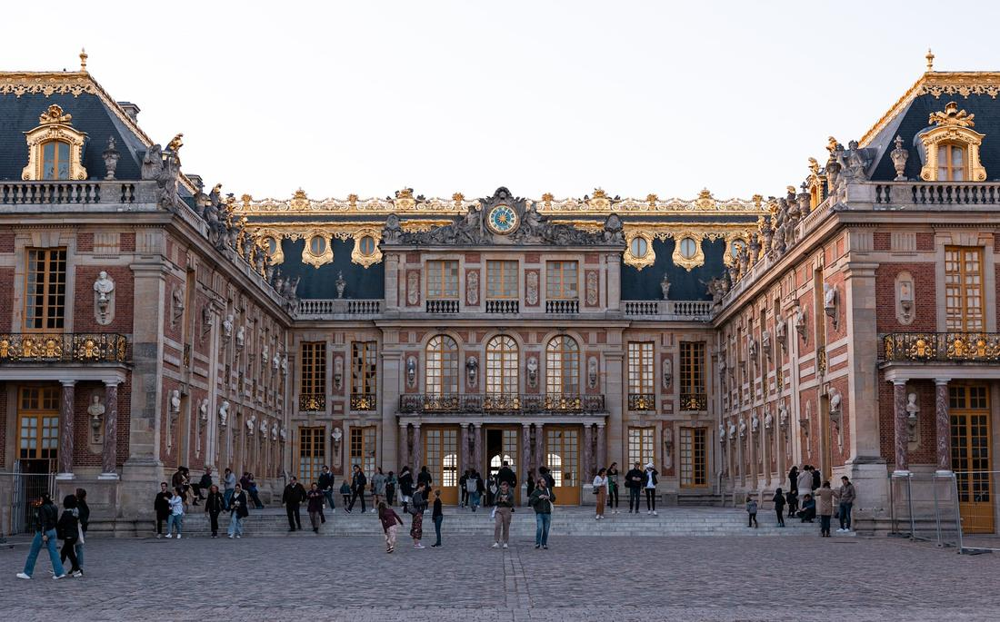
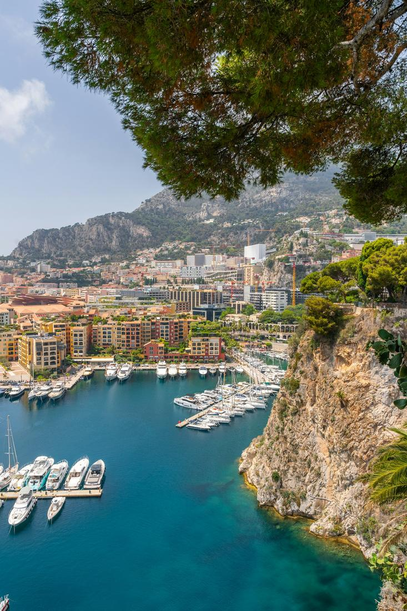

Where iconic landmarks, royal palaces, and Riviera glamour turn every day into pure romance.
France is the country I recommend when clients tell me they want a trip that feels effortlessly elegant, whether this is a honeymoon, a milestone anniversary, or simply a long-held bucket list dream. Paris alone could fill a week, but pair it with a day at the Sun King's palace or an afternoon along the Mediterranean coastline, and you have a trip that hits history, romance, and glamour in equal measure. I have planned this for newlyweds, girlfriend getaways, and clients celebrating retirement, and it never once feels like the same trip twice.
What I love most about building France itineraries is how much range the country has within just a couple of hours of each other. Paris gives you the Eiffel Tower, the Louvre, and candlelit bistro dinners. Versailles gives you gilded halls and gardens so vast you could spend a whole day just wandering them. Then, if your trip stretches south, the French Riviera hands you cliffside villages, Mediterranean views, and the kind of glamour that made Nice and Monaco famous the world over. It is a country that rewards slowing down and savoring it.
As your travel advisor, I love pulling these pieces together into days that feel seamless, whether you only have time for Paris or want to add a taste of Versailles or the Riviera to your trip. Here are three excursions I love arranging for clients heading to France, each one built from the real landmarks and experiences that make this country so unforgettable.

For most clients, this is the day that Paris becomes real. We start at the Eiffel Tower, whether that means an early skip-the-line elevator ride to the top for sweeping views over the city or simply a picture-perfect moment from the Trocadero gardens across the river. From there, it is a short ride to the Louvre, where I can arrange guided time with the Mona Lisa and the Winged Victory of Samothrace, or leave the afternoon open if art museums are not the priority. The heart of the day, though, is the Seine River cruise, gliding past Notre-Dame, the Musee d'Orsay, and the gilded dome of Les Invalides as the city slides by at a completely different pace. I like to time this for late afternoon so the light on the water turns golden just as you pass beneath the Pont Alexandre III, arguably the most beautiful bridge in the city. We can wrap the evening with dinner in a classic bistro or a stroll through Montmartre up to Sacre-Coeur, watching the city lights come on beneath you. This is Paris exactly the way you picture it, and I love handing clients that first unforgettable day in the city.

This is the excursion I build for clients who want to feel like royalty for an afternoon, and honestly, it delivers. Just outside Paris, the Palace of Versailles is bigger and more overwhelming in person than any photo can capture, and I always build in enough time to actually take it in. Inside, the Hall of Mirrors is the showstopper, seventeen arched mirrors reflecting the gardens outside and centuries of French history within its walls, but the King's and Queen's State Apartments are just as worth lingering in. Once we step outside, the gardens take over, formal hedges, fountains, and reflecting pools stretching farther than most visitors expect, easily explored on foot or, if you would rather save your legs, by rented golf cart or bike. For clients with extra time, I love adding a visit to Marie Antoinette's Estate, including the Petit Trianon and her rustic little hamlet, tucked away from the main palace crowds. We usually pair this with lunch in the town of Versailles itself before heading back into Paris. It is a full day, a grand one, and exactly the kind of royal history that makes France so endlessly fascinating.

This is the day I build for clients who want a taste of the glamorous French Riviera without committing an entire trip to it. Starting from Nice, we wind along the coastal road up to Eze, a medieval village perched dramatically on a clifftop above the Mediterranean, where cobblestone lanes lead past art galleries, a famous exotic garden, and views straight down to the sea. From there, it is on to Monaco, the tiny principality packed with outsized glamour, think the Prince's Palace, the cliffside Oceanographic Museum, and the legendary Monte Carlo Casino, all within walking distance of the yacht-lined harbor. We usually build in time to simply wander Monaco's Old Town or sit at a cafe watching the boats come and go before heading back along the coast into Nice, with its Promenade des Anglais and old town food markets. Depending on your pace, we can add a stop at a perfume house near Eze or extend the day with time on Nice's pebbled beaches. This is the Riviera at its most iconic, and it is one of my favorite day trips to arrange for anyone craving a little Mediterranean glamour.
Prefer to plan together? I'll build your custom package. Already know what you want? Book instantly through my travel portal.